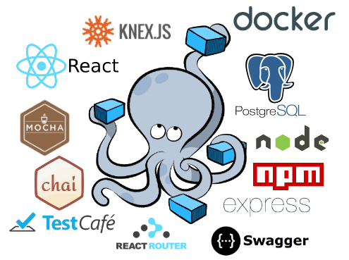
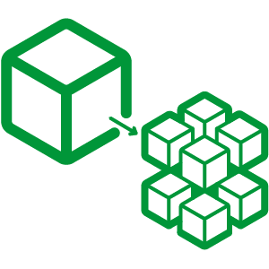
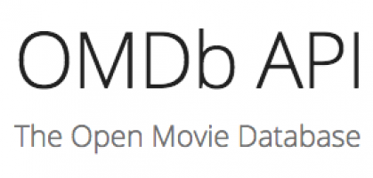

class: center, middle # Developing and Testing Microservices <br> with Node, React, and Docker <div style="text-align:center;">  </div> <br><br> Presented by *Michael Herman*, customer support by *Pete Jeffryes* --- ### Agenda -- ##### (1) Intro 1. About Me 1. About Pete 1. Objectives 1. Architecture 1. Why Microservices? 1. Project Setup -- ##### (2) Containers and Services 1. Users DB 1. Users API 1. Movies DB 1. Movies Service 1. Web Service 1. Workflow 1. End-to-End Tests 1. Swagger -- ##### (3) Next Steps / Questions ✌️ --- ### About Me ``` $ whoami michael.herman ``` -- #### Day Job: [Galvanize](http://www.galvanize.com/) (since May 2015)... 1. ~~Lead Instructor Full Stack~~ 1. ~~Curriculum Developer~~ 1. Senior Software Engineer -- #### Also: 1. Co-founder/author of [Real Python](https://realpython.com) 1. 😍 - [tech writing](http://mherman.org), [open source](http://github.com/mjhea0), [financial models](http://www.starterfinancialmodel.com/), [radiohead](http://radiohead.com/), [chilling](images/me.jpg) --- ### About Pete [Flowhub](http://flowhub.co) (since January 2016)... 1. Software Engineer 1. Team Anchor Also: 1. Brews a mean beer --- ### Objectives By the end of this talk, you should be able to: 1. Configure and run **microservices** locally with Docker and Docker Compose 1. Utilize **volumes** to mount your code into a container 1. Run unit and integration **tests** inside a Docker container 1. Enable services running in different containers to **talk** to one other 1. Secure your services via **JWT-based authentication** 1. Configure **React** to work with Docker 1. **Auto reload** Python/Flask code running inside a Docker Conatiner 1. Test the entire set of services with **functional, end-to-end** tests`*` 1. Configure **Swagger** to interact with a service`*` `*`time permitting ⏱ --- ### Architecture The end goal of this post is to organize the technologies from the above image into the following containers and services: | Name | Service | Container | Tech | |------------------|---------|-------------|----------------------| | Web | [Web](https://github.com/mjhea0/microservice-movies/tree/master/services/web) | `web-service` | React, React-Router | | Movies API | [Movies](https://github.com/mjhea0/microservice-movies/tree/master/services/movies) | `movies-service` | Node, Express | | Movies DB | [Movies](https://github.com/mjhea0/microservice-movies/tree/master/services/movies/src/db) | `movies-db` | Postgres | | Swagger | [Movies](https://github.com/mjhea0/microservice-movies/tree/master/services/movies/swagger) | `swagger` | Swagger UI | | Users API | [Users](https://github.com/mjhea0/microservice-movies/tree/master/services/users) | `users-service` | Node, Express | | Users DB | [Users](https://github.com/mjhea0/microservice-movies/tree/master/services/users/src/db) | `users-db` | Postgres | | End-to-end Tests | [Tests](https://github.com/mjhea0/microservice-movies/tree/master/tests) | n/a | TestCafe | -- #### In general, services are... 1. Organized around domain 1. Easy to replace (mostly stateless) 1. Implemented using different technologies --- ### Why Microservices? -- - Complexity shifts from the inside (code, vertical stack) to the outside (platform, horizontal stack), managing each dependency, which *can* be good if you have a younger team in terms of developers. Junior developers are free to experiment and muck up smaller apps. You must have solid dev ops support though.  -- - Less coupling, which makes scaling easier -- - Flexible - different apps can have different code bases and dependencies -- - Smaller code base, less coupled, force solid API design, not having to understand the full system = easier to read code -- - **WARNING: They are hard!** --- ### Project Setup -- #### Repo 1. `$ git clone https://github.com/mjhea0/microservice-movies` 1. `$ tree -I node_modules` 1. Quick code review -- #### Docker Compose An orchestration tool for running multi-container apps. *Often, when developing applications with a microservice architecture, you cannot fully test out all services until you deploy to a staging server. This takes much too long to get feedback. Docker helps to speed up this process by making it easier to link together small, independent services locally.* Docker 101: http://mherman.org/docker-workshop <img src="images/docker-compose.png" alt="docker compose logo" style="width:60px;"> --- ### Users DB <div> <img src="images/postgres.png" style="max-width: 20%; border:0; box-shadow: none;" alt="postgres logo"> </div> -- #### Steps: 1. Review *[Dockerfile](https://github.com/mjhea0/microservice-movies/blob/master/services/users/src/db/Dockerfile)* and *[docker-compose.yml](https://github.com/mjhea0/microservice-movies/blob/master/docker-compose.yml)* 1. Build image, run container: `docker-compose up -d --build users-db` 1. Test/Sanity Check: `docker exec -ti users-db psql -U postgres -W` and `docker-compose run users-db bash` --- ### Users API <div style="text-align:left;"> <img src="images/node-logo.png" style="max-width: 20%; border:0; box-shadow: none;" alt="node logo"> </div> #### Steps: 1. Quick [code](https://github.com/mjhea0/microservice-movies/tree/master/services/users) review 1. Review *[Dockerfile](https://github.com/mjhea0/microservice-movies/blob/master/services/users/Dockerfile)* and *[docker-compose.yml](https://github.com/mjhea0/microservice-movies/blob/master/docker-compose.yml)* 1. Build image, run container: `docker-compose up -d --build users-service` 1. Test/Sanity Check: ```sh # create and seed the db $ docker-compose run users-service knex migrate:latest \ --env development --knexfile app/knexfile.js $ docker-compose run users-service knex seed:run \ --env development --knexfile app/knexfile.js # run unit and integration tests $ docker-compose run users-service npm test ``` 1. http://localhost:3000/users/ping --- ### Movies DB <div> <img src="images/postgres.png" style="max-width: 20%; border:0; box-shadow: none;" alt="postgres logo"> </div> -- #### Steps: 1. Review *[Dockerfile](https://github.com/mjhea0/microservice-movies/blob/master/services/movies/src/db/Dockerfile)* and *[docker-compose.yml](https://github.com/mjhea0/microservice-movies/blob/master/docker-compose.yml)* 1. Build image, run container: `docker-compose up -d --build movies-db` 1. Test/Sanity Check: `docker exec -ti movies-db psql -U postgres -W` and `docker-compose run movies-db bash` --- ### Movies API <div style="text-align:left;">  </div> #### Steps: 1. Quick [code](https://github.com/mjhea0/microservice-movies/tree/master/services/movies) review 1. Review *[Dockerfile](https://github.com/mjhea0/microservice-movies/blob/master/services/movies/Dockerfile)* and *[docker-compose.yml](https://github.com/mjhea0/microservice-movies/blob/master/docker-compose.yml)* 1. Build image, run container: `docker-compose up -d --build movies-service` 1. Test/Sanity Check: ```sh # create and seed the db $ docker-compose run movies-service knex migrate:latest \ --env development --knexfile app/knexfile.js $ docker-compose run movies-service knex seed:run \ --env development --knexfile app/knexfile.js # run unit and integration tests $ docker-compose run movies-service npm test ``` 1. http://localhost:3001/movies/ping --- ### Web Service <div> <img src="images/react-logo.svg" style="max-width: 15%; border:0; box-shadow: none;" alt="react logo"> </div> #### Steps: 1. Quick [code](https://github.com/mjhea0/microservice-movies/tree/master/services/web) review 1. Review *[Dockerfile](https://github.com/mjhea0/microservice-movies/blob/master/services/web/Dockerfile)* and *[docker-compose.yml](https://github.com/mjhea0/microservice-movies/blob/master/docker-compose.yml)* 1. Build image, run container: ```sh # build and run: $ docker-compose up -d --build web-service ``` 1. Test/Sanity Check: navigate to [http://localhost:3007](http://localhost:3007) --- ### Workflow -- #### Movies Service 1. Docker logs - `docker-compose logs -f [container-name]` 1. Live reload - make a change, watch it update! -- #### Web Service 1. Live reload - Although live reload *probably* works with this version of Create React App, it is recommended to develop outside of the container. <br> <div style="text-align:left;"> <img src="images/docker-logo.png" style="max-width: 15%; border:0; box-shadow: none;" alt="docker logo"> </div> --- ### End-to-End Tests <div> </div> #### Notes: 1. These are not containerized 1. Check out the TestCafe 101 @ http://mherman.org/testcafe-example #### Steps: 1. Quick [code](https://github.com/mjhea0/microservice-movies/tree/master/tests) review 1. Test: `testcafe firefox tests/**/*.js` 1. Run all all tests with [test.sh](https://github.com/mjhea0/microservice-movies/blob/master/test.sh): `sh test.sh` --- ### Swagger <div> </div> #### Steps: 1. Quick [code](https://github.com/mjhea0/microservice-movies/tree/master/services/movies/swagger) review 1. Review *[Dockerfile](https://github.com/mjhea0/microservice-movies/blob/master/services/movies/swagger/Dockerfile)* and *[docker-compose.yml](https://github.com/mjhea0/microservice-movies/blob/master/docker-compose.yml)* 1. Build image, run container: `docker-compose up -d --build swagger` 1. Test/Sanity Check: navigate to [http://localhost:3003/docs/](http://localhost:3003/docs/) --- ### That's it! What's next? -- #### Next Steps 1. Add Nginx 1. React - fix bugs, add features, etc. 1. Update Swagger - add additional endpoints, add support for JWT-auth -- #### Resources 1. [Slides](http://mherman.org/microservice-movies) 1. [Project repo](https://github.com/mjhea0/microservice-movies) 1. [Blog post](http://mherman.org/blog/2017/05/11/developing-microservices-node-react-docker) 1. [How to Build 12 Factor Microservices on Docker](https://www.packtpub.com/books/content/how-to-build-12-factor-design-microservices-on-docker-part-1) 1. [Docker Cheat Sheet](https://github.com/wsargent/docker-cheat-sheet) -- #### Other examples 1. ***[Testdriven.io](http://testdriven.io/) - Microservices with Docker, Flask, and React*** ❤️ 1. [Developing and Testing Microservices With Docker](http://mherman.org/blog/2017/04/18/developing-and-testing-microservices-with-docker) 1. [Developing React with Docker](http://mherman.org/node-workshop/slides/react-docker) --- ### Questions? -- Well... --- ### Thanks!! -- Anna -- Pete -- Develop Denver -- You!